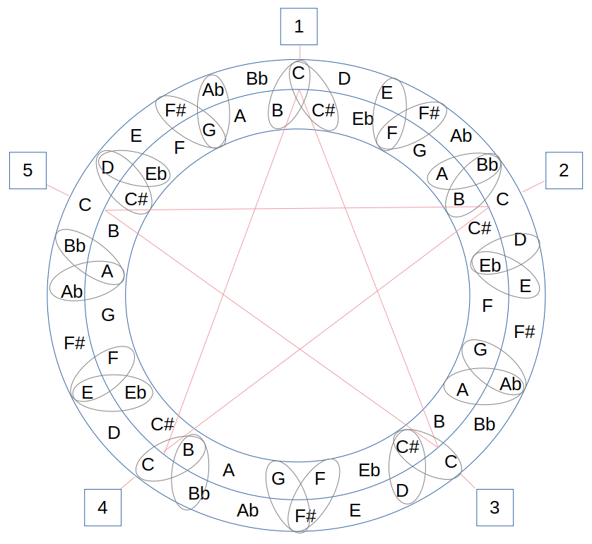
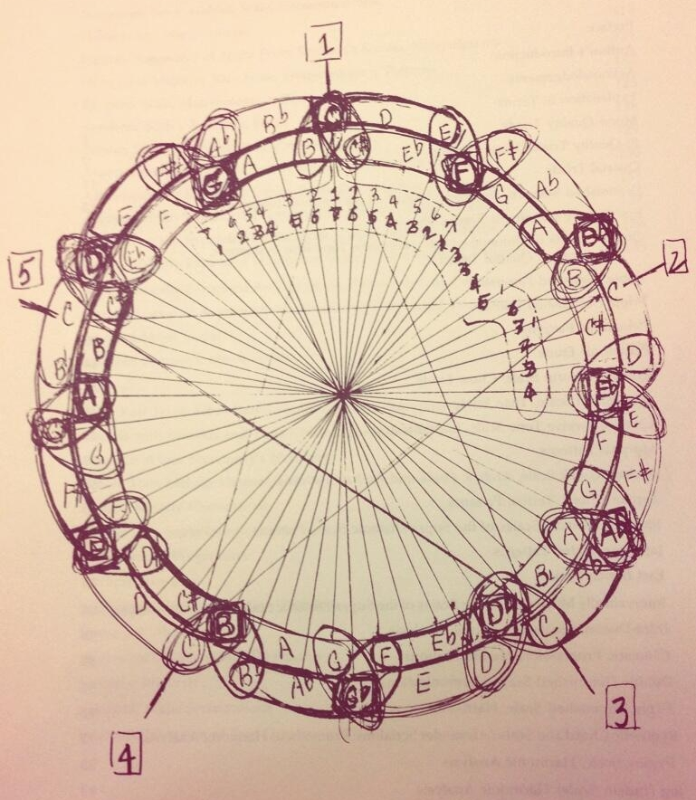

Coltrane's Mystery Music Diagram

Like many music theory minded people, who also are into jazz, I have seen and wondered about John Coltrane's curious circle drawing...

This fascinating diagram speaks for itself... I guess! Theoretically, this is just two concentric circles of whole-tones. But why the curious chromatic clusters? Why separate them with a minor 3rd interval? And notice that no cluster is ever repeated. They are all unique all the way around the circle. Cool! And why are the outer and inner circles divided into sections of five notes? And how does this diagram illustrate Coltrane's playing? Hmmmm 🤔
Here is Coltrane's original drawing. (Notice that he messed up at 9 o'clock.)

So... I think that Coltrane might have used this diagram like so:
- Start anywhere on the inner or outer circle.
- Move right or left playing whole-tones.
- If you get to a section boundary, play the cluster, unless going back.
- If you land on a midpoint cluster, you can play those notes.
- GOTO 2
Naturally, being a programmer, I was compelled to attempt to automate the playing (via MIDI) of this diagram. Check out the code, if you dare.
The results are so-so at best... So I imported a run into my DAW to have better drums: